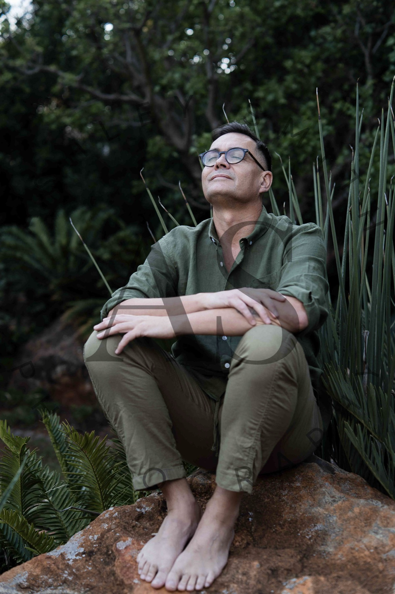

You tend to show up as
“You're so independent.”
It's what people say about you, and it's true. But while it might look that way from the outside, there's often more going on underneath.
This is a starting point, not a label. Most of us recognise ourselves in more than one of these patterns, because we learned different ways to stay safe at different times.
You like your own company. If you want to see a film, you go and see it. You don't wait for anyone. You've got friends and family, but you don't need anyone to look after you, and you'd rather they didn't try.
People see you as capable. Calm. The one who's got it handled.
Being alone isn't hard for you. But sometimes being around people can feel like hard work. Working out what to say, how to be, then replaying the conversation on the way home. On your own, you can simply be.
I spent years believing that being strong meant being able to handle everything myself. I became very good at carrying things by myself, without anybody knowing.
Maybe somewhere along the way, being on your own felt easier than risking being left out, laughed at or let down. You might have learned to watch more than you joined in. To be present without being too visible.
And it gave you something real. Plenty of people don't know how to be by themselves. You do. I think that's a strength.
The cost is quiet, so it's easy to miss. You might still want connection, but sometimes find yourself holding back from the very situations where it could happen.
There's a difference between enjoying your own company and avoiding other people because you're afraid of how it might go. From the inside, the two can feel exactly the same.
I've started to wonder whether being completely independent is really freedom. Or whether, sometimes, it's another way of protecting ourselves from being hurt.
You don't need to become more sociable, or give up the freedom you value. It's yours, and it matters.
The shift might be smaller than that. You can choose when to be alone and when to let someone in. You can keep your independence and still let yourself be supported, without feeling like a burden. Both things can be true.
Who gets to see you struggle?
I'm only now learning how much lighter it is to let someone in.
Gay Men Connect · The Circle
The Gay Men Connect Circle is free and online, every Monday at 6pm UK time, for up to 15 men. You don't have to say anything at all.
The first circle is on Monday 4 January 2027, a New Year's intention setting circle.
I offer free 45-minute calls, A Private Discovery Conversation. It's a quiet, one-to-one conversation, to talk about where you are and see whether working together feels right.
The first calls are on Monday 4 January 2027, and you can book one now.

A picture of the weekend, made for this page. Not a photograph of a past retreat.
The Gay Men Connect Retreat is a weekend for gay, bi, trans and queer men, from 10 to 12 September 2027, at Hill Farm in Tintern, near Chepstow.
It's a chance to spend time with other men without feeling you need to entertain anyone. No alcohol, drugs or sex. Just time together, honest conversations and evenings around the fire.
I wrote about the first time I walked into a room full of men I didn't know, and how close I came to not going.
You might see yourself in more than one of these. Most of us do.